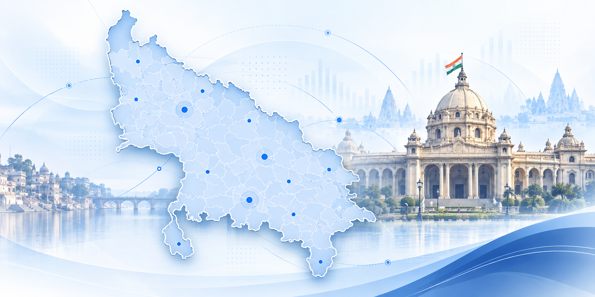

ASSEMBLY BASELINE
403 / 4032022 विधानसभा सीटें
403सीटें
| BJP | 255 |
| SP | 111 |
| ADS | 12 |
| RLD | 8 |
| SBSP | 6 |
| NISHAD | 6 |
| INC | 2 |
| JDL | 2 |
| BSP | 1 |
INTELLIGENCE SIGNALSeat history is the starting point — not the strategy.
403 विधानसभा क्षेत्रों के लिए प्रीमियम राजनीतिक इंटेलिजेंस — सत्यापित चुनावी बेसलाइन, विधानसभा संकेत और बूथ-स्तरीय निर्णय सहायता एक ही workflow में।
सत्यापित चुनावी डेटा को समझने, तुलना करने और सवाल पूछने के लिए आपका dedicated political intelligence copilot.
विधानसभा चुनें · अपनी भूमिका बताएं · पार्टी चुनें
अपनी विधानसभा चुनकर VANDIRA से seat, booth, election movement और current politics पर grounded सवाल पूछें.
2022 Assembly baseline + 2024 Lok Sabha signal
| BJP | 255 |
| SP | 111 |
| ADS | 12 |
| RLD | 8 |
| SBSP | 6 |
| NISHAD | 6 |
| INC | 2 |
| JDL | 2 |
| BSP | 1 |
| SP | 37 |
| BJP | 33 |
| INC | 6 |
| RLD | 2 |
| ADS | 1 |
| ASPKR | 1 |
AI विज़ुअल और सत्यापित विधानसभा डेटा लेयर के लिए एक समर्पित प्रवेश बिंदु

AI विज़ुअल राज्य का संदर्भ दिखाता है; अगली डेटा लेयर में AC-स्तरीय सत्यापित जानकारी और विधानसभा इंटेलिजेंस उपलब्ध होगी।
चुनावी डेटा को निर्णय-योग्य इंटेलिजेंस में बदलने वाला workflow।
Seat profile, results, margin और political context।
सीट डॉसियर →Selected party और opponent performance signals।
Booth view →Turnout और constituency-level indicators।
Signals →Priority seats और margin-based ranking।
Priority view →Decision-ready PDF intelligence dossiers.
Reports →Data को campaign decisions में translate करें.
Consulting →हर लेयर का उद्देश्य एक ही है — बेहतर चुनावी निर्णय।
अपने विधानसभा क्षेत्र के लिए पूरा Political Intelligence workflow देखें।